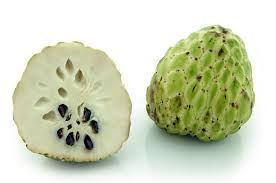
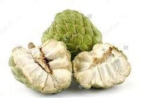
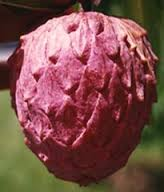
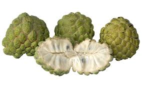

|  |
This fruit is popular in Taiwan, where it is known as the "pineapple sugar apple". An atemoya is normally heart-shaped or rounded, with pale-green, easily bruised, bumpy skin. Near the stem, the skin is bumpy as it is in the sugar-apple, but become smoother like the cherimoya on the bottom. The flesh is not segmented like that of the sugar-apple, bearing more similarity to that of the cherimoya. |
|  |
is the fruit of the species Annona cherimola, which generally is thought to be native to Ecuador,Colombia, Peru and Bolivia then transported to the Andes and Central America. Today, cherimoya is grown throughout South Asia,Central America, South America, California, Hawaii, southern Europe and northern Africa. |
|  |
Pinks Mammoth are large super sweet fruit which some growers hand pollinate at flowering to improve fruit shape. |
|  |
This heart shaped fruit has a medium thick skin, more seed than the Pinks Mammoth and produces high yields. The early and consistent bearing, presentable fruit and early maturing is what makes this the main commercial variety. |